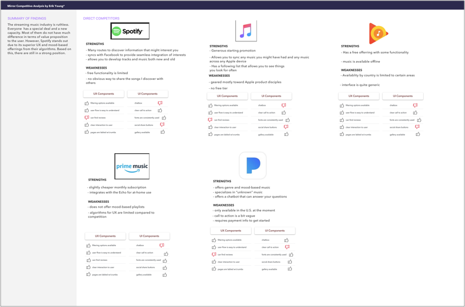
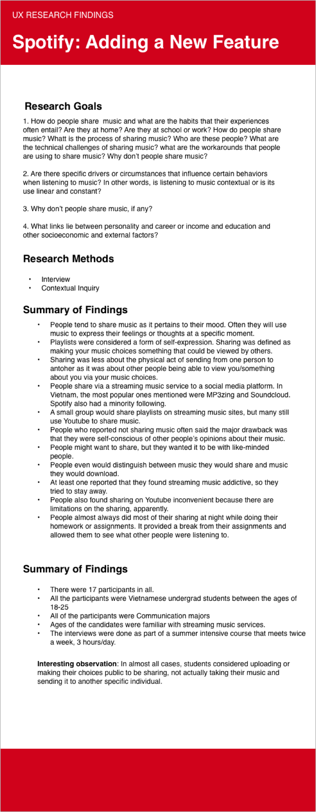
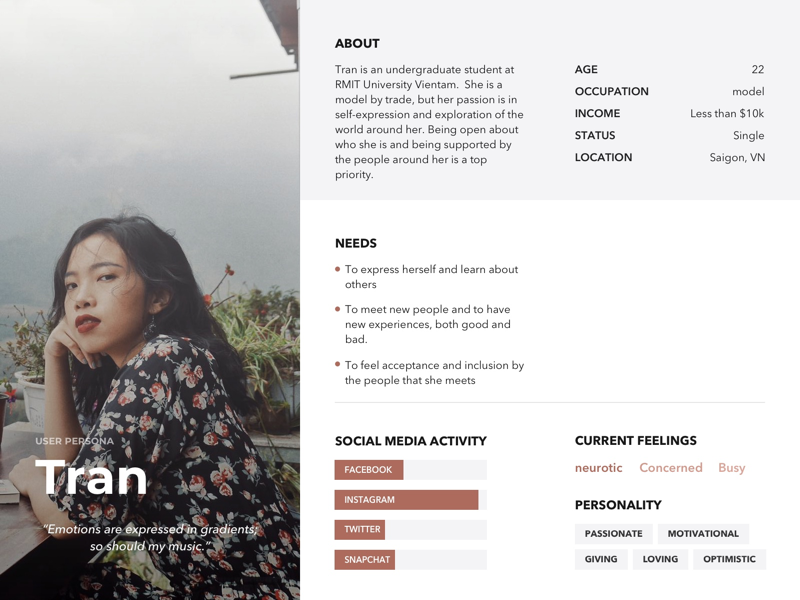
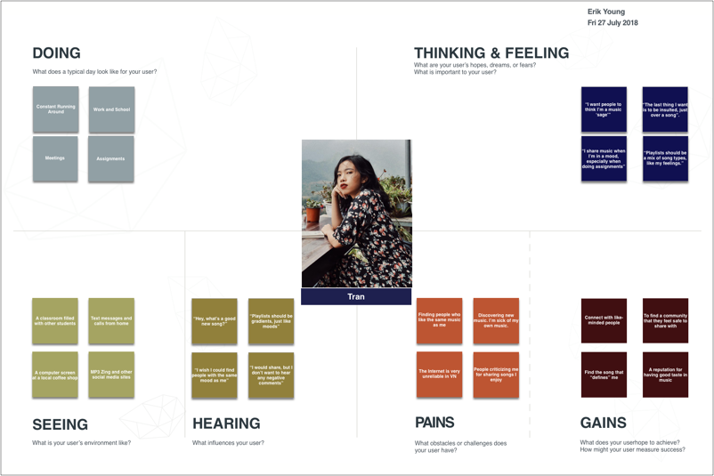
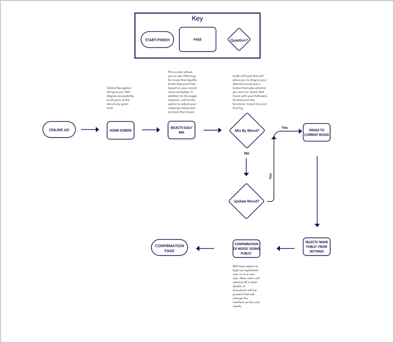
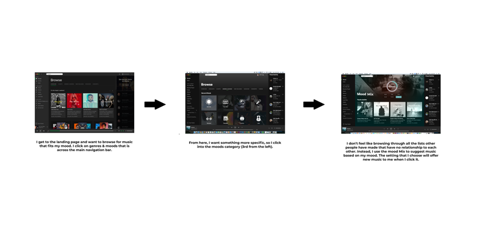
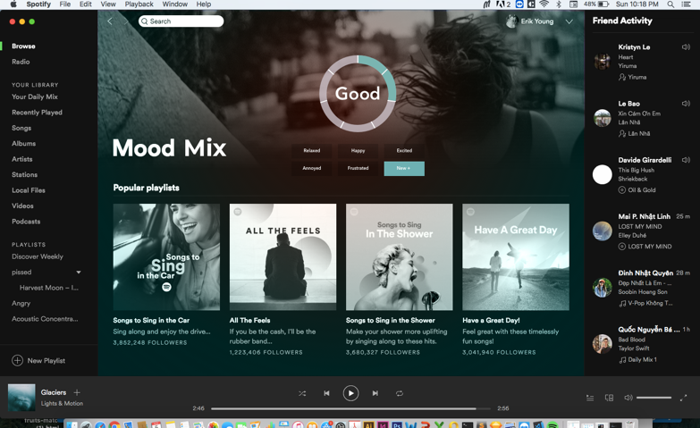
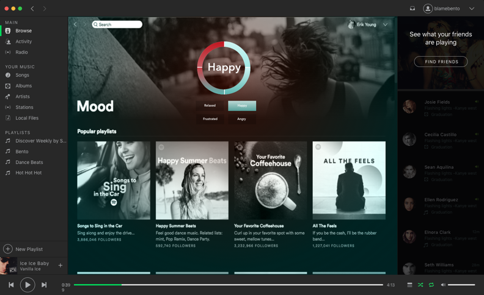

Problem
Sharing music is a very popular concept and one that has grown in popularity in recent years. To encourage further growth of this, however, understanding what people share and how they define sharing has become an important area for investigation.
Goal
Develop a new feature for Spotify that would encourage and advance the sharing functionality of the existing app.
My Role
UX/UI Designer & Researcher

Summary
Spotify is amongst the most popular streaming music applications in existance. While the accessbility of music and the discovery of new music remains their core business, in recent years there has been a growing interest in expanding music into the social sharing sphere.
The primary users are people who are looking for music that will match their mood. Most users revealed that when they look for ‘mood music’, they often rely on music that they already know. While Spotify allows users to select music amongst a number of lists that have been created, however, they currently have to spend a lot of time to look through the lists and find something that they find relevant. With this new feature, users can sort based on four basic moods. These lists will allow you to narrow down your selection faster.
Process
Research

Research began by looking at the current landscape of online streaming music. We started with an exhaustive competitive analysis to see who the major players in the market were and what points of differentiation may have existed. The goals here were straightforward: to better understand how sharing was being done by any competitors, and to what extent was it successful; we also wanted to see how we could further distinguish our own existing product and develop a truly organic social music sharing sphere. Here is a quick look at where we started off:

We inverviewed 6 people, ranging in age from 21 to 51 to get a diverse range of perspectives from people who buy products or regularly do any shopping. During the interviews, the emphases of our interviews was on their recollection of a recent shopping experience. Through this retelling of their experiences, we looked deeply at the motivations behind certain purchases and understanding the drivers that went into certain purchases as well as what pain points came up during their shopping experience. We then used this information to inform the main content of our page and how we intended to proceed with building out the site.
As a general summary, we discovered that purchases are not done randomly; rather, they are part of a variety of circumstances, recent decisions and experiences, and even marketing that has led to their purchase. On top of that, we also discoverd what they want out of a shopping experience as well: maximum info and maximum convenience.
Primary research was done with 17 different people. At first, individual interviews were conducted to get direct feedback on students aboout they music sharing habits generally, when they shared music, and what kinds of moods and/or other psychological triggers were part of this. From there, we worked through a problem statement and ideation strategy to uncover how we could best take their feedback and develop those ideas. This part was developed into 3 strategies:
- Problem Statements (“How Might We..?”)
- Ideation (Crazy 8’s)
- Storyboarding
With those ideas fresh out there, we began to iterate over possible solutions to see what could be possible. For the research, however, here is what we learned:

With this information, we could finally begin to build out what our users were about with some degree of confidence through the use of a Persona and an Empathy Map. These two documents help us to focus our energies into specific regions.


The main aspect that is carried throughtout all the interviews and the maps above is this: music is something that I share to express myself, and my mood is a core part of what I express. I want to be able to show my mood as part of a continuum.
Strategy

With all this research and useful information from users, we now had to begin the work of conceptualizing the Information Architecture and where this new feature would be located on the application and how would people interract with it. This created an interesting problem:
It makes no sense to develop a user flow on something that people are already familiar with and already has an existing UI, so how do we develop the correct placement and interaction with the feature without incorporating usability testing as part of the information architecture process?


As you can see in the above layouts of the user flow, a simple chart was not going to get at the success of the user to get to our task, nor was it going to address their ability to interact with the new feature. So from this chart, we developed a brief user flow that lead to the page and the ‘mood mix’ that we constructred. But this still didn’t get at what we wanted, so we had to iterate further. From here, we took the feedback and began to develop the user flow more fully, specifically with regard to the navigation on the page we wanted:

From here, the user would be able to click on the mood bar and have music offerrings shuffled based on the click of a mood. But with all that planning, we still hadn’t had a human interract this new feature. It was time to do some Usability Testing.
Usability and Prototyping
Usability testing revealed a number of important factors that were not taken into account. On the whole, many of them were related to the interaction with the ‘pie chart’ and the buttons. Some of the feedback was:
- It is not clear what the pie is meant to represent
- There was no interraction with the buttons so it was hard to know whether the mood had shifted or that even my answer was recorded.
- There were so many moods and an option to create new ones, so what exactly would happen if I added a new mood?
So with this feedback, we went back and reiterated on the interface and developed a clearer, more concise plan that showed the user how and what would occur when they used the application when searching for mood music. Here is the final result along with the prototype <%= link_to 'https://invis.io/V2NE9658MKJ' do %> here.<% end %>

Subsequent tests revealed a more better user experience and a complete understanding of the role of the ‘mood mix’ in the sorting and locating of music.
Reflection
This project put the role of the UX Designer front and center. With many projects, there is a specific endpoint that can generally be foreseen for a web-based application. For this, however, not only did we not know what the final outcomes would be, but we also had to learn to integrate it within the bounds of an existing application.